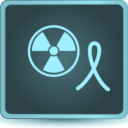
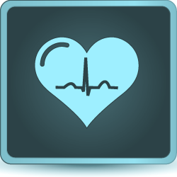
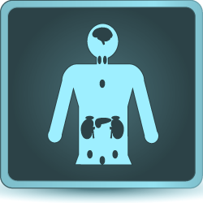
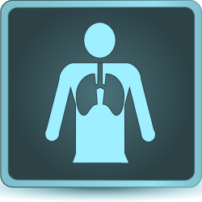
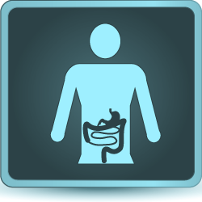
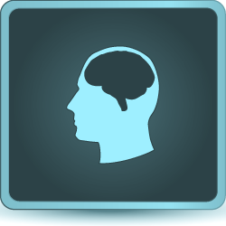
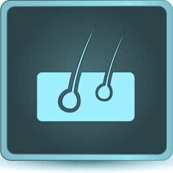
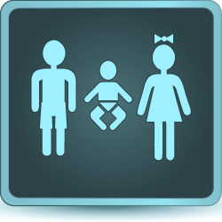
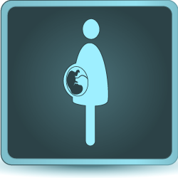
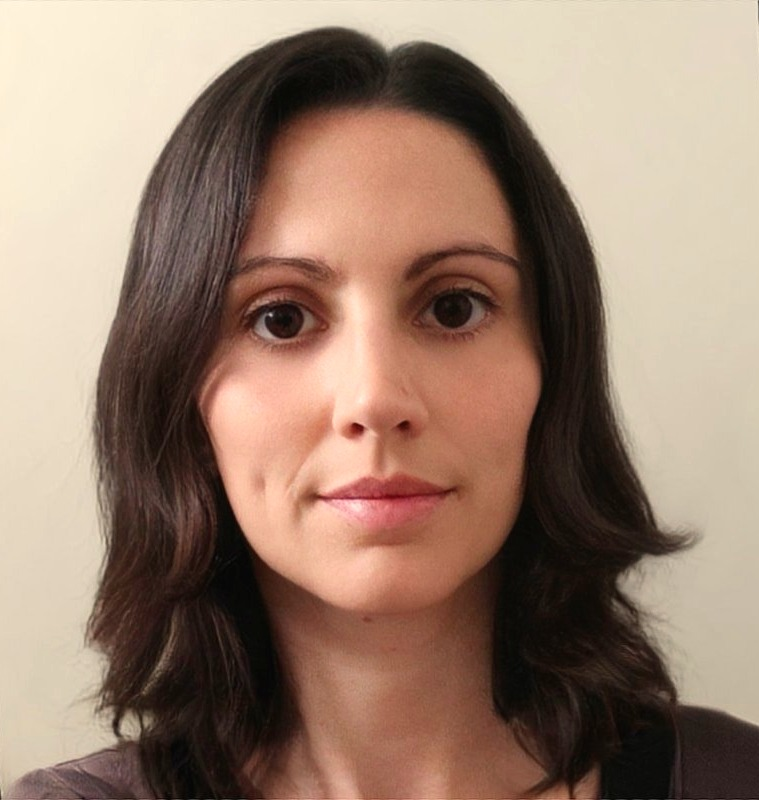

Conseil & expertise opérationnelle · Essais cliniques de bout en bout
OKILYS Life Science
12 ans d'expérience en recherche clinique, du terrain à la coordination de projet, au service de la réussite de vos essais cliniques.
Discutons de votre étude →- Conception de l'étude
- Start-Up
- Conduite & clôture
- Coordination de projet
- Clinical Oversight
À propos
Une expertise qualifiée, adaptée à chaque étude
OKILYS Life Science est une entreprise française dynamique, portée par une expertise senior en Recherche Clinique. Nous intervenons sur l'ensemble des catégories d'essais : médicament, dispositif médical, évaluation de la pratique courante, recherches sur données collectées et Interventions Non Médicamenteuses (INM).
OKILYS évalue vos besoins puis mobilise l'expertise la plus adaptée à vos études, en cours ou à venir : conception de l'étude et sélection des centres, activités Start-Up, contrats et réglementaire (SSU & Contract Specialist, SSU Lead), coordination au sein des centres (Study Coordinator), monitoring des centres investigateurs (Senior CRA), gestion d'étude (Clinical Trial Lead), supervision qualité des prestataires (Clinical Oversight Manager),… Chaque mission peut être suivie de sa conception à sa clôture.
Nos valeurs
HOME : ce qui guide chacune de nos missions
Humain
La santé des personnes est le point de départ et le point d'arrivée de chaque étude. Nous gardons le patient et les équipes des centres au cœur des décisions — parce qu'un essai réussi, c'est d'abord des personnes bien accompagnées.
Objectivité
Hôpital, CRO, promoteur : avoir occupé chaque poste de la chaîne nous donne un regard sans parti pris sur une étude. Nous voyons les contraintes de chacun, nous les faisons dialoguer, et nous disons ce que nous voyons.
Maîtrise
Connaître les procédures, les bonnes pratiques cliniques et les réglementations européennes et nationales, ce n'est pas subir des contraintes : c'est savoir où une étude peut se gripper, et l'anticiper. La rigueur qui sécurise les délais, les données et les patients.
Engagement
S'engager, c'est tenir la direction autant que livrer le résultat : le premier contrat négocié comme le dernier patient suivi reçoivent la même attention, et chaque étape est menée avec la même exigence jusqu'à la clôture.
OKILYS Life Science met son expertise au service de la santé des générations futures
Développement clinique
Du produit de santé au patient
Médicament, dispositif médical, données de vie réelle, pratique courante ou intervention non médicamenteuse : chaque catégorie suit un parcours de développement qui lui est propre. OKILYS intervient sur le versant recherche clinique de chacun de ces parcours.
Médicament
Phases I à IV : first-in-human et escalade de dose, recherche de dose efficace, confirmation pivotale, puis suivi en vie réelle — y compris les médicaments de thérapie innovante (MTI / ATMP) et les produits OGM.
Découvrir le parcours →Dispositif médical
Investigation clinique : sécurité et performances cliniques chez l'humain, du prototype au suivi clinique après commercialisation (PMCF).
Découvrir le parcours →Données
Études RWD/RWE, rétrospectives ou prospectives, sur données de soins, registres et entrepôts de données de santé.
Découvrir le parcours →Pratique courante
Recherches à risques et contraintes minimes ou non interventionnelles : le soin suit la pratique habituelle, la recherche porte sur le recueil.
Découvrir le parcours →Interventions Non Médicamenteuses
Activité physique adaptée, nutrition, psychothérapie, santé numérique : évaluation clinique confrontée à la standardisation de l'intervention et à l'absence d'aveugle.
Découvrir le parcours →Cinq parcours, un même terrain d'action : l'étude clinique,
de la conception à la clôture.
End-to-end
Nos expertises, de la conception à la clôture
Chaque barre indique les étapes de l'étude couvertes par un champ d'intervention d'OKILYS.
1. Conception
Conseil stratégique selon le type d'essai (y compris essais atypiques ou de phase précoce), protocole & synopsis, ICF : rédaction, adaptation pays, vérification des traductions françaises (FR, BE, CH), eCRF, CTMS, outils patients2. Sélection des centres
Choix des pays et des centres investigateurs : faisabilité, visites de sélection3. Préparation
Collecte des documents essentiels des centres, négociation des contrats & budgets (Convention Unique, Pharma.be), notifications ARS & CNOM, préparation des dossiers de soumission4. Soumissions
Stratégie de soumission selon le type d'essai · Règlement UE : CTIS Part II · Réglementations nationales : ANSM & CPP, CNIL/HDH (FR), AFMPS & Comités d'éthique (BE) — initiales & amendements, jusqu'à la Greenlight (autorisation + contrat signé)5. Mise en place
Visites de mise en place, formation des équipes, activation, 1er patient6. Conduite & suivi
Recrutement des patients, visites de monitoring & de boosting du recrutement — sur site ou à distance (RBM, DCT), communication étroite & escalation, qualité des données, eTMF, gestion des risques & déviations7. Clôture
Visites de clôture des centres, résolution des dernières requêtes, retours des traitements & du matériel, réconciliation & archivage du TMF/eTMF, bilan de l'étudePour tout autre besoin, nous sommes à votre écoute pour évaluer les possibilités de travailler ensemble.
Nous contacterSecteurs, domaines & types d'essais
Secteurs et domaines d'intervention
Nous accompagnons l'ensemble des acteurs de la recherche clinique — industriels, CROs, promoteurs institutionnels et centres investigateurs — sur des essais médicamenteux, des dispositifs médicaux, des études sur données de vie réelle (RWD/RWE) et des Interventions Non Médicamenteuses (INM), dans de nombreuses aires thérapeutiques.
Secteurs
Aires thérapeutiques

Oncologie
Cardiologie
Endocrinologie
Pneumologie
Gastro-entérologie
Neurologie
DermatologiePopulations spécifiques

Pédiatrie
Femmes enceintesAu cœur d'OKILYS
Lydie PARSUS, fondatrice d'OKILYS

Lydie PARSUS
Fondatrice & Directrice d'OKILYS Life Science
MSc Biochimie — Université de Lyon
Certificat ARC (mention très bien) · Certificat Clinical Project Manager
Certifiée ICH-GCP (R3) · Formée au Règlement (UE) n°536/2014 & au CTIS (EMA)
Français natif · Anglais courant · Notions d'allemand
Depuis plus de 12 ans, Lydie PARSUS a fait le choix délibéré d'explorer les différents rôles qui composent l'écosystème de la recherche clinique — de l'hôpital aux CROs, du terrain à la coordination : Study Coordinator, Senior CRA, SSU & Contract Specialist, SSU Lead, Clinical Trial Lead, Clinical Oversight Manager. Un parcours mené à l'échelle européenne et internationale — Union européenne, Royaume-Uni, Amérique du Nord —, jusqu'à coordonner des équipes multi-pays, des maladies rares aux pathologies courantes.
Sa signature : une prise en charge de bout en bout des études, du démarrage à la clôture, et une vision préventive de la qualité — pour avoir occupé chaque poste de la chaîne, elle sait où les études se grippent et anticipe les problèmes avant qu'ils n'impactent les délais, les données ou les patients.
Attachée à transmettre, elle accompagne et forme les ARCs juniors — avec un même fil conducteur, du premier contrat négocié au dernier patient suivi : améliorer l'offre de santé apportée à l'humain.
Pourquoi lui faire confiance
Un rôle naturel de facilitatrice — aligner priorités, équipes et calendriers pour garder chaque étude sur la bonne trajectoire
Une double vision stratégique et opérationnelle — comprendre les contraintes de chacun, du terrain au promoteur, et les faire dialoguer
Une communication adaptée à chaque interlocuteur : investigateurs, équipes des centres, promoteurs, prestataires
Des relations solides avec les centres et une anticipation des risques, ancrées dans l'expérience terrain
Une adaptabilité éprouvée — outils, contraintes réglementaires et priorités changeantes
Références
Ils nous font confiance
“She has consistently demonstrated a high level of professionalism, attention to detail, and deep understanding of regulatory requirements. […] Her dedication and strategic mindset make her an invaluable asset to any clinical operations teams.”
Magdalena Wierucka-Rybak, PhD SSU Lead, Precision for Medicine / Mission OKILYS : SSU & Contract Specialist
“What truly sets Lydie apart […] is her ability to navigate the unique challenges of contracts and budgets negotiation work with confidence and efficiency — especially within the French clinical trial landscape. I highly recommend her for any start-up roles in clinical research, particularly in France.”
Mar Galan Dalmau Sr Manager, Site Start-Up (EMEA), Precision for Medicine / Mission OKILYS : SSU & Contract Specialist
“She was able to establish a great relationship with the participating sites and achieve great results on the study contracts. She demonstrated to be very knowledgeable on the start up and contract process and requirements […] We highly appreciate her seniority and support in setting things right and back in the good track.”
Giselle G. García Varela Start-up Clinical Operations Lead RWE, IQVIA RWE / Mission OKILYS : SSU & Contract Specialist
“Very professional with a strong expertise. It is a pleasure to work with Lydie. Pragmatic in her approach, she is very autonomous with a focus on quality. I really appreciated our collaboration.”
Kevin Poupard Clinical Program Lead Medical Device, Teoxane / Mission OKILYS : Senior CRA
Voir toutes les recommandations sur LinkedIn ↗
Sociétés avec lesquelles nous avons travaillé

CROs, laboratoires pharmaceutiques, biotechs, fabricants de dispositifs médicaux et cabinets de conseil en développement clinique, sur des essais menés en France et à l'international.
Parcours salarié, jusqu'en 2019
Postes salariés occupés par Lydie PARSUS jusqu'en 2019, avant le lancement de son activité indépendante : Fortrea (alors Chiltern), Labcorp (alors Covance), IQVIA (alors Quintiles) et les Hospices Civils de Lyon. IQVIA figure dans les deux listes : d'abord employeur, puis client d'OKILYS via son entité Real World Evidence.
Contact
Contactez OKILYS
Vous recrutez sur un poste en recherche clinique ? Lydie PARSUS étudie les opportunités correspondant aux rôles et expertises présentés sur ce site. Écrivez-nous, nous revenons vers vous rapidement.
Nos coordonnées
Parlons de votre étude
-
Société
OKILYS Life Science — SIREN 881 686 497
Questions fréquentes
Prenez-vous en charge des essais cliniques de A à Z (full service) ?
Nous intervenons sur des missions ciblées, à une ou plusieurs étapes de l'étude — de la conception à la clôture — selon vos besoins. Si votre étude nécessite des compétences complémentaires aux nôtres, nous pourrons vous orienter vers l'un de nos partenaires.
Sur quels types de produits intervenez-vous ?
Sur le versant recherche clinique du médicament, du dispositif médical, des études sur données de vie réelle et des évaluations de la pratique courante. Chacun de ces parcours est détaillé dans la rubrique Développement clinique. Les Interventions Non Médicamenteuses (INM) sont un champ que nous souhaitons investir : nous le disons franchement sur la page dédiée.
Travaillez-vous uniquement en France ?
Non : nos compétences nous permettent d'intervenir, selon les étapes souhaitées, dans plusieurs pays et régions — en Europe et au-delà.
Qu'est-ce que le Clinical Oversight ?
C'est la supervision, côté promoteur, des prestataires d'une étude (CRO, vendors), exigée par les bonnes pratiques cliniques. OKILYS la met en place et l'anime pour votre compte.
Sous quels délais pouvez-vous démarrer une mission ?
Nous échangeons pour cadrer précisément vos besoins et vous proposer un calendrier adapté au périmètre et à l'urgence de votre étude.